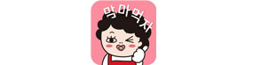

신뢰의 액셀러레이터,
씨엔티테크
2003년에 설립된 씨엔티테크는 2012년부터 스타트업 기업의
발굴 및 육성 그리고 투자에 적극 앞장 서고 있습니다.
-
씨엔티테크는 TIPS 운영사이며, 다수의 개인투자조합(모태펀드 포함)을 운영하고 있어100억 원 이상의 업계 최상위권의 투자 자본력을 유지하고 있습니다.
-
선도벤처형 액셀러레이터인 씨엔티테크의 장점은 투자와 동시에 씨엔티테크가 보유한 총 7개 국가의 B2B 비즈니스 인프라를 통해 기술 지원, 마케팅 등 스타트업들에게 현실적인 도움을 주고 있는 것입니다.
-
13/250/60
현재 누적 기수 13기, 육성 스타트업 250여 개, 투자 포트폴리오 60개 이상으로 대한민국 초기 기업 투자 시장의 한 부분을 담당하고 있다 해도 과언이 아닙니다.
5G 시대!
빠른 액셀러레이터,
씨엔티테크
씨엔티테크의 스타트업 투자는 빠르고 정직하며 겸손합니다.
-
씨엔티테크의 투자를 원하시면, 각 기업에서 사용하고 있는 자유로운 형식의 사업 계획서를 ir@cntt.co.kr로 보내주세요.
씨엔티테크 액셀러레이팅팀은 24시간 내로 답변을 드리고 있으며, 매주 IR을 진행하고 있습니다. 지원 후 일주일 내에 IR 미팅을 가질 수 있습니다.
IR 미팅 진행 후 투자대상 기업은 Term Sheet을 일주일 내로 받을 수 있으며, 상호 동의 후 계약서 작성에 들어갑니다. -
IR 미팅의 분위기는 절대 고압적이지 않습니다. 친구를 만나는 느낌으로 커피와 함께 대화하는 형태로 이루어집니다. 그리고 모든 IR 미팅은 대표이사가 직접 참여합니다.
왜냐하면 모든 스타트업들이 소중하기 때문입니다. -
씨엔티테크에서 이루어지는 모든 IR 미팅은 재미있고 감동적입니다.
국내에서 가장 빠르고, 친절하며 믿음이 가는 액셀러레이터, 씨엔티테크와 함께 하기를 원하신다면, 주저하지 마시고 사업 계획서를 보내주세요. 성공을 향한 가장 친한 친구가 되어드리겠습니다.씨엔티테크의 친구들
씨엔티테크는 투자 기업들을 친구라고 부릅니다.-
대한민국 대표 푸드 미디어 ‘쿠캣’ 친구의 기업가치는 투자 후 무려 3000% 성장하였고, 키즈폰 제조업체 ‘키위플러스’ 친구는 투자 후 500% 성장하여 지난 2018년 카카오에 인수된 후 매출 200억 원을 달성하였습니다.
-
‘신의 직장’ 친구는 클로저라는 인공지능 챗봇 서비스로 챗봇 인지도 TOP 3에 랭크되어 있고, ‘비스키트’ 친구는 IoT 기반 위치 추적 목걸이로 아이들의 안전을 책임지고 있습니다.
-

친구 ‘더맘마’는 요즘 매우 바쁜데요. 여기저기 슈퍼마켓에 마트 자동화 시스템을 설치하느라 정신이 없습니다. ‘어거스트텐’ 친구는 전 세계에서 IoT 마스크팩 주문이 들어와서 얼굴 보기도 힘드네요.
-
‘오투오시스’ 친구는 배달대행 물량이 너무 많아서 더 이상 도와 주기가 어렵고, ‘소프트자이온’ 친구는 해외에 CRM 용역을 받아서 열심히 영어공부를 하고 있습니다.
-
친구 ‘혼밥인의 만찬’은 갑자기 혼밥 시대가 되면서 여기저기 불려 다니느라 매출 집계가 안된다고 하고, 친구 ‘달리셔스’는 주문이 너무 많아서 대표이사도 배달을 다닌다고 해요.
휴~~ 친구가 너무 많아서 소개를 다 못하겠네요.
더 자세한 친구 목록은 포트폴리오 메뉴를 확인해주세요.씨엔티테크 액셀러레이팅 2.0
2019년 하반기, 우리는 씨엔티테크 액셀러레이팅 2.0을 새롭게 선보입니다.
기존에는 선발된 스타트업을 보육한 후 투자를 결정하는 방식이었다면,
새롭게 출범하는 씨엔티테크 액셀러레이팅 2.0은 5G 초고속 투자 형태입니다.
왜냐하면 친구들의 의견이 돈부터 달라고 해서죠.
향후 전화성의 어드벤처는 보육 기수가 아닌 연도별 투자 기업 기수 관리 형태로 운영됩니다.
씨엔티테크는 액셀러레이터로서 지속적으로 투자자본을 확대하고 스타트업의
성공적인 시장 안착과 사업 고도화를 위한 새로운 솔루션들을 선도적으로 세계 시장에 제시할 것입니다. -